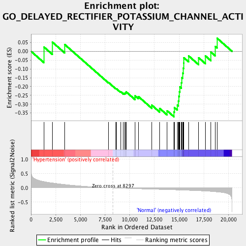
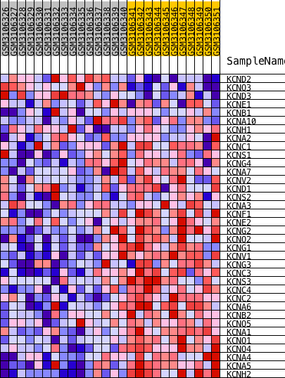
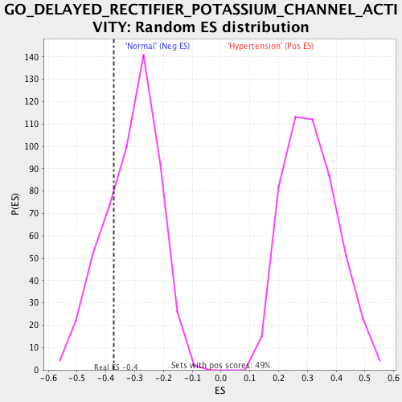

| | | Dataset | GSE113439.GSE113439.cls#Hypertension_versus_Normal |
| Phenotype | GSE113439.cls#Hypertension_versus_Normal |
| Upregulated in class | Normal |
| GeneSet | GO_DELAYED_RECTIFIER_POTASSIUM_CHANNEL_ACTIVITY |
| Enrichment Score (ES) | -0.37160134 |
| Normalized Enrichment Score (NES) | -1.1905099 |
| Nominal p-value | 0.25536063 |
| FDR q-value | 1.0 |
| FWER p-Value | 1.0 |
Table: GSEA Results Summary

Fig 1: Enrichment plot: GO_DELAYED_RECTIFIER_POTASSIUM_CHANNEL_ACTIVITY
Profile of the Running ES Score & Positions of GeneSet Members on the Rank Ordered List
| PROBE | DESCRIPTION
(from dataset) | GENE SYMBOL | GENE_TITLE | RANK IN GENE LIST | RANK METRIC SCORE | RUNNING ES | CORE ENRICHMENT | | 1 | KCND2 | description | | | 1291 | 0.224 | 0.0251 | No |
| 2 | KCNQ3 | description | | | 2147 | 0.176 | 0.0528 | No |
| 3 | KCND3 | description | | | 3428 | 0.121 | 0.0378 | No |
| 4 | KCNE1 | description | | | 7843 | 0.007 | -0.1766 | No |
| 5 | KCNB1 | description | | | 8604 | -0.005 | -0.2121 | No |
| 6 | KCNA10 | description | | | 8634 | -0.005 | -0.2115 | No |
| 7 | KCNH1 | description | | | 9070 | -0.011 | -0.2285 | No |
| 8 | KCNA2 | description | | | 9360 | -0.015 | -0.2369 | No |
| 9 | KCNC1 | description | | | 9502 | -0.016 | -0.2373 | No |
| 10 | KCNS1 | description | | | 9575 | -0.017 | -0.2341 | No |
| 11 | KCNG4 | description | | | 9625 | -0.018 | -0.2294 | No |
| 12 | KCNA7 | description | | | 10520 | -0.027 | -0.2625 | No |
| 13 | KCNV2 | description | | | 10523 | -0.028 | -0.2517 | No |
| 14 | KCND1 | description | | | 10867 | -0.031 | -0.2562 | No |
| 15 | KCNS2 | description | | | 12231 | -0.045 | -0.3055 | No |
| 16 | KCNA3 | description | | | 13040 | -0.053 | -0.3243 | No |
| 17 | KCNF1 | description | | | 13787 | -0.060 | -0.3371 | No |
| 18 | KCNE2 | description | | | 14490 | -0.068 | -0.3448 | Yes |
| 19 | KCNG2 | description | | | 14519 | -0.068 | -0.3193 | Yes |
| 20 | KCNQ2 | description | | | 14812 | -0.071 | -0.3053 | Yes |
| 21 | KCNG1 | description | | | 14925 | -0.073 | -0.2820 | Yes |
| 22 | KCNV1 | description | | | 14962 | -0.073 | -0.2548 | Yes |
| 23 | KCNG3 | description | | | 15029 | -0.074 | -0.2288 | Yes |
| 24 | KCNC3 | description | | | 15079 | -0.074 | -0.2017 | Yes |
| 25 | KCNS3 | description | | | 15224 | -0.076 | -0.1786 | Yes |
| 26 | KCNC4 | description | | | 15253 | -0.076 | -0.1497 | Yes |
| 27 | KCNC2 | description | | | 15346 | -0.078 | -0.1235 | Yes |
| 28 | KCNA6 | description | | | 15409 | -0.078 | -0.0955 | Yes |
| 29 | KCNB2 | description | | | 15448 | -0.079 | -0.0661 | Yes |
| 30 | KCNQ5 | description | | | 15467 | -0.079 | -0.0356 | Yes |
| 31 | KCNA1 | description | | | 15971 | -0.086 | -0.0265 | Yes |
| 32 | KCNQ1 | description | | | 16985 | -0.100 | -0.0368 | Yes |
| 33 | KCNQ4 | description | | | 17659 | -0.111 | -0.0257 | Yes |
| 34 | KCNA4 | description | | | 18212 | -0.123 | -0.0042 | Yes |
| 35 | KCNA5 | description | | | 18676 | -0.136 | 0.0268 | Yes |
| 36 | KCNH2 | description | | | 18841 | -0.141 | 0.0746 | Yes |
Table: GSEA details [plain text format]

Fig 2: GO_DELAYED_RECTIFIER_POTASSIUM_CHANNEL_ACTIVITY
Blue-Pink O' Gram in the Space of the Analyzed GeneSet

Fig 3: GO_DELAYED_RECTIFIER_POTASSIUM_CHANNEL_ACTIVITY: Random ES distribution
Gene set null distribution of ES for GO_DELAYED_RECTIFIER_POTASSIUM_CHANNEL_ACTIVITY